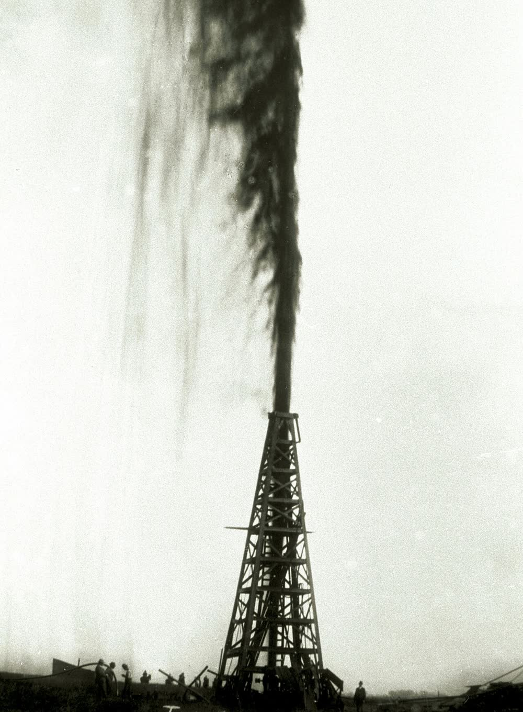
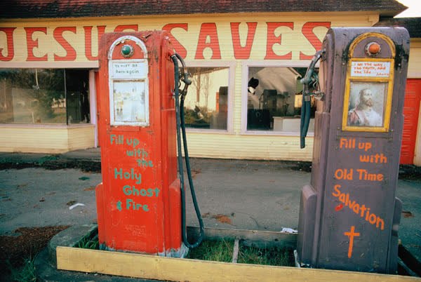

석유의 역사 — 검은 황금이 세계 경제를 흔든 이야기The History of Oil — How Black Gold Shook the World Economy
- 석유는 자동차, 공장, 비닐, 비료까지 만드는 현대 경제의 혈액입니다.Oil is the lifeblood of the modern economy, used for cars, factories, plastics and even fertilizer.
- 공급이 갑자기 줄면(전쟁, 감산) 값이 치솟고 물가 전체가 오릅니다.When supply suddenly drops (war, output cuts), prices soar and overall inflation rises.
- 유가는 "공급과 수요", 그리고 중동 정세와 산유국의 결정에 크게 흔들립니다.Oil prices swing with supply and demand, Middle East politics and producers' decisions.
출장 조율을 다닐 때 기름값은 제 생활과 바로 연결됩니다. 기름값이 오르면 운반비도 오르고, 시장의 물건값도 따라 오릅니다. 석유가 어떻게 이렇게 큰 힘을 갖게 되었는지 역사를 따라가 봅니다.
When I travel for tuning jobs, fuel prices hit my life directly. When fuel goes up, moving costs and market prices follow. Let's trace how oil came to have such power.1. 1859년, 드레이크의 유정
1. Drake's well, 1859석유는 오래전부터 땅 위로 스며 나와 약이나 방수재로 쓰였습니다. 1859년 미국 펜실베이니아주 타이터스빌에서 에드윈 드레이크가 땅을 뚫어 석유를 뽑아내면서 본격적인 석유 산업이 시작되었습니다. 처음에는 등불을 밝히는 등유가 주요 상품이었습니다.Oil had long seeped from the ground and was used as medicine or waterproofing. In 1859, Edwin Drake drilled for oil in Titusville, Pennsylvania, starting the modern oil industry. At first the main product was kerosene for lamps.
2. 록펠러와 스탠더드 오일
2. Rockefeller and Standard Oil존 D. 록펠러가 1870년 세운 스탠더드 오일은 한때 미국 정유의 대부분을 차지했습니다. 너무 거대해져 경쟁을 막는다는 이유로 1911년 미국 대법원 판결로 여러 회사로 쪼개졌습니다. 독점을 막는 법(반독점법)의 상징적인 사건입니다.Standard Oil, founded by John D. Rockefeller in 1870, once controlled most US refining. Because it blocked competition, the Supreme Court broke it up in 1911, a landmark antitrust case.
3. 1901년 스핀들톱과 자동차 시대
3. Spindletop in 1901 and the age of cars1901년 텍사스 스핀들톱에서 석유가 하늘 높이 솟구쳤습니다. 엄청난 양의 값싼 석유가 쏟아지면서, 자동차와 비행기가 퍼지는 20세기가 열렸습니다.In 1901, oil shot high into the sky at Spindletop, Texas. Huge amounts of cheap oil opened the 20th century of cars and airplanes.

4. 1960년 OPEC
4. OPEC in 19601960년 이라크 바그다드에서 이란, 이라크, 쿠웨이트, 사우디아라비아, 베네수엘라가 모여 석유수출국기구(OPEC)를 만들었습니다. 산유국이 힘을 모아 생산량과 가격에 목소리를 내기 시작한 것입니다.In 1960, Iran, Iraq, Kuwait, Saudi Arabia and Venezuela met in Baghdad and formed OPEC. Oil producers began to work together on output and prices.
5. 1973년과 1979년 오일쇼크
5. The oil shocks of 1973 and 19791973년 중동 전쟁 때 아랍 산유국들이 석유 수출을 막자 유가가 몇 달 만에 약 4배로 뛰었습니다. 1979년 이란 혁명 때 또 크게 올랐습니다. 물가가 치솟고 경기는 나빠져 스태그플레이션이 왔습니다. 우리나라도 큰 충격을 받아 에너지 절약 운동을 벌였습니다.In 1973, during a Middle East war, Arab producers cut exports, and oil prices rose about four times in months. They jumped again after the 1979 Iranian revolution. Prices soared while growth weakened: stagflation. Korea was hit hard and launched energy-saving campaigns.

6. 2008년 147달러, 2020년 마이너스 유가
6. $147 in 2008 and negative oil in 20202008년 7월 국제 유가는 배럴당 147달러 근처까지 올랐다가 금융위기로 몇 달 만에 40달러 아래로 떨어졌습니다. 2020년 4월 코로나로 수요가 사라지자 미국 서부텍사스유(WTI) 선물 가격이 하루 동안 마이너스 37달러까지 떨어지는 일도 있었습니다. 저장할 곳이 없어서 돈을 주고라도 넘기려 했기 때문입니다. 2026년에도 중동 분쟁 소식에 브렌트유가 100달러를 넘나들며 크게 출렁였습니다.In July 2008, oil neared $147 a barrel, then fell below $40 within months in the financial crisis. In April 2020, when COVID erased demand, the WTI futures price fell to minus $37 for a day, because there was no space to store it. In 2026, news of Middle East conflict pushed Brent above and below $100.
7. 유가가 경제에 미치는 길
7. How oil prices reach the economy유가가 오르면 운송비와 원재료비가 올라 물가가 오릅니다. 물가가 오르면 중앙은행은 금리를 올리고, 금리가 오르면 주식과 채권이 부담을 받습니다. 반대로 산유국과 정유·에너지 회사에는 이익이 될 수 있습니다. 우리나라는 석유를 거의 전부 수입하기 때문에 유가와 환율이 동시에 오르면 부담이 두 배가 됩니다.Higher oil raises transport and material costs, pushing up prices. Central banks then raise rates, which weighs on stocks and bonds. Producers and energy companies may gain. Korea imports almost all its oil, so rising oil and a rising exchange rate together double the burden.
8. 조율사의 생각
8. A tuner's thought석유는 피아노의 댐퍼 페달 같습니다. 살짝만 밟아도 모든 소리가 함께 울려 퍼지지요. 유가 한 가지가 움직이면 경제 전체가 함께 울립니다. 그래서 경제 뉴스를 볼 때 유가를 늘 함께 보는 습관이 좋습니다.Oil is like a piano's damper pedal: press it lightly and every note rings together. When oil moves, the whole economy resonates. So it is a good habit to check oil prices whenever you read economic news.
📘 오늘의 영어 단어
📘 Today's English words| 영어 | 발음 | 뜻 |
|---|---|---|
| crude oil | 크루드 오일 | 원유 |
| barrel | 배럴 | 배럴(약 159리터) |
| oil well | 오일 웰 | 유정 |
| refinery | 리파이너리 | 정유소 |
| OPEC | 오펙 | 석유수출국기구 |
| embargo | 엠바고 | 수출 금지 |
| oil shock | 오일 쇼크 | 석유 파동 |
| energy | 에너지 | 에너지 |
| price spike | 프라이스 스파이크 | 가격 급등 |
| benchmark | 벤치마크 | 기준 가격 |
쉬운 예문
- Oil prices affect almost everything we buy.
유가는 우리가 사는 거의 모든 것에 영향을 줍니다. - OPEC decided to cut production.
OPEC이 생산을 줄이기로 했습니다. - A barrel of oil is about 159 liters.
원유 1배럴은 약 159리터입니다.
🔊 버튼을 누르면 브라우저에 들어 있는 음성으로 영어를 읽어 줍니다(기기에 따라 안 될 수 있어요).
자주 묻는 질문
Frequently asked questions원유는 언제 사는 게 유리한가요?When is it better to buy oil?
공급이 넘쳐 값이 바닥권일 때가 교과서적으로 유리하다고 하지만, 전쟁 소식 하나로 크게 움직여 위험이 큽니다. 원유 선물 상품은 구조가 복잡하니 꼭 공부한 뒤 접근하세요. 투자 권유는 아닙니다.Textbooks say when oversupply pushes prices to a low, but a single war headline can move it a lot. Oil futures products are complex; study first. Not investment advice.
WTI와 브렌트유는 무엇이 다른가요?What is the difference between WTI and Brent?
WTI는 미국 텍사스 지역 원유, 브렌트유는 북해산 원유 가격 기준입니다. 우리나라가 많이 들여오는 중동산은 두바이유를 기준으로 봅니다.WTI is a US Texas crude benchmark, Brent is North Sea crude. For Middle East crude, which Korea imports a lot, Dubai crude is the benchmark.
유가가 내리면 무조건 좋은가요?Is falling oil always good?
물가가 안정되는 장점이 있지만, 유가가 너무 내리면 세계 경기가 나쁘다는 신호이거나 산유국 경제가 흔들려 다른 문제가 생길 수 있습니다.Prices become stable, but very low oil may signal a weak world economy or trouble in producer countries.
※ 이 글은 투자 권유가 아닌 공부 자료입니다.※ This page is study material, not investment advice. 숫자와 연도는 널리 알려진 역사 자료를 바탕으로 쉽게 정리했으며, 실제 투자 판단은 본인 책임입니다. 사진 출처: Lucas gusher.jpg (퍼블릭 도메인) · Potlatch gas.jpg (퍼블릭 도메인 (David Falconer, 미국 환경보호청 DOCUMERICA)). 그림과 움직이는 그림은 직접 만들었습니다. · 📞 010-8756-8740